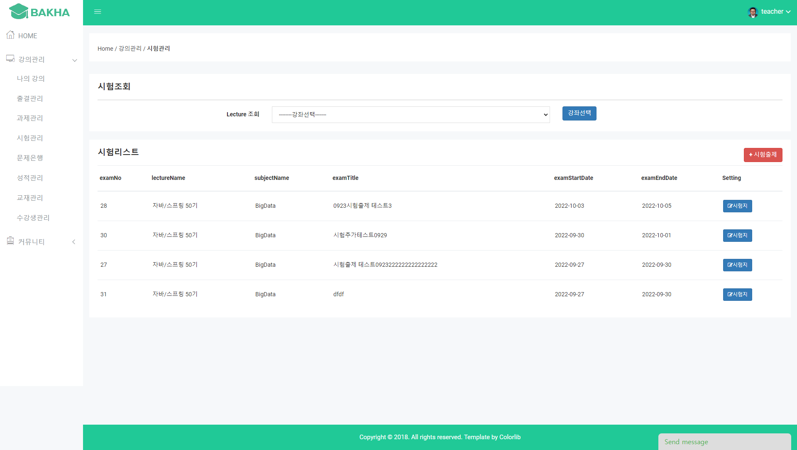
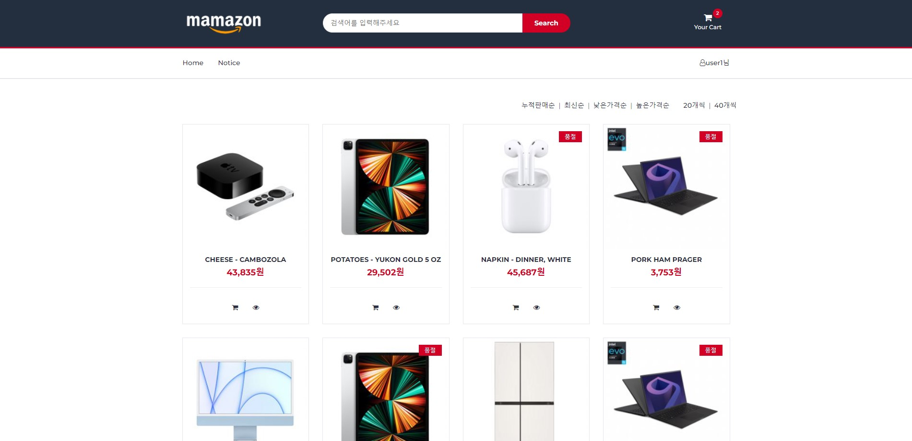
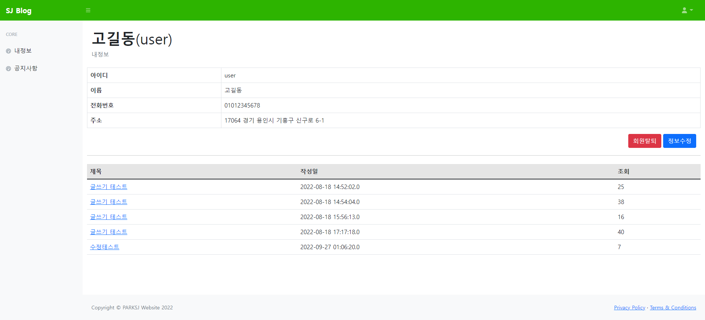

박소정
Back End Web Developer
Introduction
신입 백엔드 개발자 박소정입니다.
"실패는 성장의 밑거름"
실패를 두려워하기보다는 성장하지 못함을 두려워하는 개발자가 되고 싶습니다.
새로운 기술을 다루는 데에 흥미를 가지고 다양한 기술을 사용해보고자 노력합니다.
프로젝트 진행 중에 오류를 겪을 때는 스트레스도 받고 어떻게 해야 할지 골머리를 앓기도 하지만
그것을 해결함으로써 얻는 성취감과 즐거움이 더욱 크기에 즐거운 마음으로 개발에 임하고 있습니다.
Education
구디아카데미 교육 수료 예정
국비지원 직업훈련
2022.04.25 - 2022.10.13
(디지털컨버전스) 공공데이터 융합 자바/스프링 개발자 양성과정(5)
컴퓨터 프로그래밍 언어로 각 업무에 맞는 소프트웨어의 기능에 관한 설계 및 구현을 수행하고, 사용자에게 배포할 수 있는 기술을 습득
▶ Achievements
- 1개월차 :
- 자바 개발 환경 구성, 변수와 자료형, 연산자, 제어문, 조건식, 참조 연산자 등 자바 기초 문법 학습
- 이를 이용하여 Eclipse에서 Java로 은행 업무(출금, 입금, 조회, 탈퇴) 프로그램을 개발 - 2개월차 :
- 클래스와 객체, 클래스 내부/외부 구성 요소를 학습
- MariaDB와 MySQL 개발환경 구성, 데이터 처리 및 관리법을 학습 - 3개월차 :
- DML(SELECT, INSERT, UPDATE, DELETE)
- DDL(CREATE, ALTER, DROP)
- DCL(GRANT, REVOKE), TCL(COMMIT, ROLLBACK)
- HTML 기본 태그, CSS 기본 기능 학습 및 실습
- Bootstrap 실습 - 4개월차 :
- Model1 구조의 Shop 개인 프로젝트 진행 - 5개월차 :
- Model2 구조의 Blog 개인 프로젝트 완성
- Model1 구조의 Shop 개인 프로젝트 완성 - 6개월차 :
- MVC 구조의 학습 관리 시스템(LMS) 팀 프로젝트 진행
▶ 성장일기
Skills & Tools
Backend
-
JAVA
-
JSP
-
Maria DB
-
AWS
-
Spring Framework
-
MyBatis
-
Tomcat
Frontend
-
HTML/HTML5
-
CSS/CSS3
-
JavaScript
고려대학교
대학교
2015.03.01 - 2021.08.25
뇌인지과학융합전공(복수전공)
뇌신경과학, 인지과학, 심리학, 정보통신, 뇌공학 등의 다학제간 융합전공을 통하여 미래 핵심 기술인 뇌 및 인지과학에 대한 기초 지식 및 기술을 습득
전자및정보공학과
창의·융합형 글로벌 공학 인재 육성을 위해 나노전자공학, 통신공학, 의공학, 신호/영상 처리공학, 반도체공학, 컴퓨터공학 세부 전공 분야들의 고유한 전공능력을 배양
광명북고등학교
고등학교
2011.03 - 2014.02
과학중점전공(이과)
수학·과학에 특화된 교육과정을 배우는 학급으로 진학하여 과학탐구(물리,화학,생물,지구과학) Ⅰ, Ⅱ과목을 모두 이수하고 다양한 과학 관련 체험 활동
Portfolio
-
MVC 구조로 제작한 팀프로젝트로 DB설계부터 배포까지 완성
- Preview :
 - 팀 프로젝트[팀원 4명]
- 시험 파트 구현
- 문제은행 파트 구현
- 전체적인 CSS 수정
- 성적처리 파트 구현
▣ Development Environment- OS : window11
- Library : JSTL, jQuery, Servlet, BootStrap
- Language : HTML5, CSS3 , Java(JavaSE-11), JavaScript
- Database : MariaDB(10.3)
- WAS : Apache Tomcat9
- IDE : Spring Tool Suite 4
▣ Service Environment- OS: Ubuntu (18.04)
- Platform : AWS Lightsail
- Preview :
-
Model1 구조로 제작한 첫 쇼핑몰 프로젝트
- Preview :
 - 개인 프로젝트
- 관리자 전용 페이지 (사원관리/주문관리/고객관리/상품관리)
- 사용자 페이지
- 회원가입 / 아이디 중복검사 / 다음 주소 API
- 회원정보 상세보기 / 수정 / 탈퇴
- 주문내역 / 주문취소
- 장바구니 추가, 수량변경, 삭제, 리스트
- 리뷰 작성 / 리뷰 보기 / 리뷰 삭제 / 리뷰 수정
- 낮은 가격순 / 높은 가격순 / 주문많은순 / 최신순 으로 상품리스트 출력
- 상품 검색기능
▣ Development Environment- OS : window11
- Library : JSTL, jQuery, Servlet, BootStrap
- Language : HTML5, CSS3 , Java, JavaScript
- Database : MariaDB
- WAS : Apache Tomcat9
- IDE : Eclipse
▣ Service Environment- OS: Ubuntu (18.04)
- Platform : AWS Lightsail
- Preview :
-
Model2 구조를 배울 때 실습을 통해 익히고자 제작한 미니 프로젝트
- Preview :
 - 개인 프로젝트
- 회원가입 / 아이디 중복검사 / 다음 주소 API
- 회원정보 상세보기 / 수정 / 탈퇴
- 공지사항 글쓰기 / 상세보기 / 수정 / 삭제
- 내가 쓴 글 리스트
- 조회수 / 좋아요
▣ Development Environment- OS : window11
- Library : JSTL, jQuery, Servlet, BootStrap
- Language : HTML5, CSS3 , Java, JavaScript
- Database : MariaDB
- WAS : Apache Tomcat9
- IDE : Eclipse
▣ Service Environment- OS: Ubuntu (18.04)
- Platform : AWS Lightsail
- Preview :
-
애견 유치원 회원권 프로그램2022.05.01 - 2022.06.28
학원 1~2개월 차에 제작한 프로그램
- 개인 프로젝트
- BANK VER1 - OPERATOR
- BANK VER2 - IF
- BANK VER3 - STRING
- BANK VER4 - FOR
- BANK VER5 - 1차원배열
- BANK VER6 - 2차원배열
- BANK VER7 - Method
- BANK VER8 - Class
- BANK VER9 - MODIFIER
- BANK VER10 - 컨트롤러
- BANK VER11 - 클래스배열
- BANK VER12 - Extends
- BANK VER13 - 클래스배열버젼
▣ Development Environment- OS : window11
- Language : Java
- IDE : Eclipse
Experience
TOEIC
자격증
2020/01/19
- 기관 : 한국TOEIC위원회
2019년도 정규과정 겨울학기 한국인 도우미
대외활동
2019.12.20 - 2020.02.20
- 기관 : 고려대학교 한국어센터
- 고려대학교 한국어센터에서 어학연수생들이 한국어 학습과 학국문화를 배우는 데에 도움을 줌
- 그 결과 2019년도 정규과정 겨울학기 최우수 한국인 도우미로 선정
롯데장학재단 장학생
대외활동
2016.03 - 2018.02
- 기관 : 롯데장학재단
- 롯데 장학재단에서 장학생으로 선발되어 등록금 전액을 지원
- 장학 재단에서 진행한 봉사 활동에 참여
Young Entrepreneurship 프로그램 '1등' 수상
공모전
2018.02
- 기관 : 고려대학교 미래인재개발원
- 1년동안 진행한 창업 프로젝트로 Young Entrepreneurship 프로그램에 참여하여 1등을 수상
2017 소셜벤처 아이디어 경진대회 참가
예선심사 통과 / 권역대회 진출
공모전
2017.08
- 기관 : 고용노동부
- '뇌파 패턴에 따른 맞춤형 우울 장애 음악 치료 시스템' 아이템으로 2017 소셜벤처 아이디어 경진대회 참가
- 예선심사에 통과하여 권역대회에 진출하여 아이디어 발표 진행
2017년 1학기 국내창업현장탐방
대외활동
2017.07
- 기관 : 고려대학교 창업교육센터
- 국내창업현장탐방을 진행할 회사를 선정하여 컨택
- 2017.07.18 '뉴로핏'에 방문하여 현장 탐방 및 아이디어 기술 자문
자동차운전면허증 2종보통
자격증
2017.09.01
- 기관 : 경기남부지방경찰청